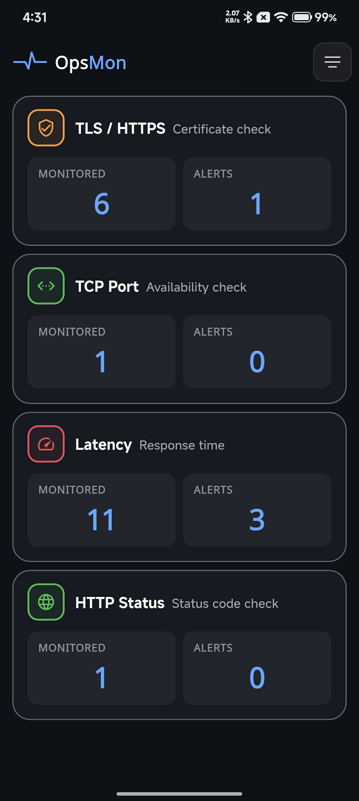
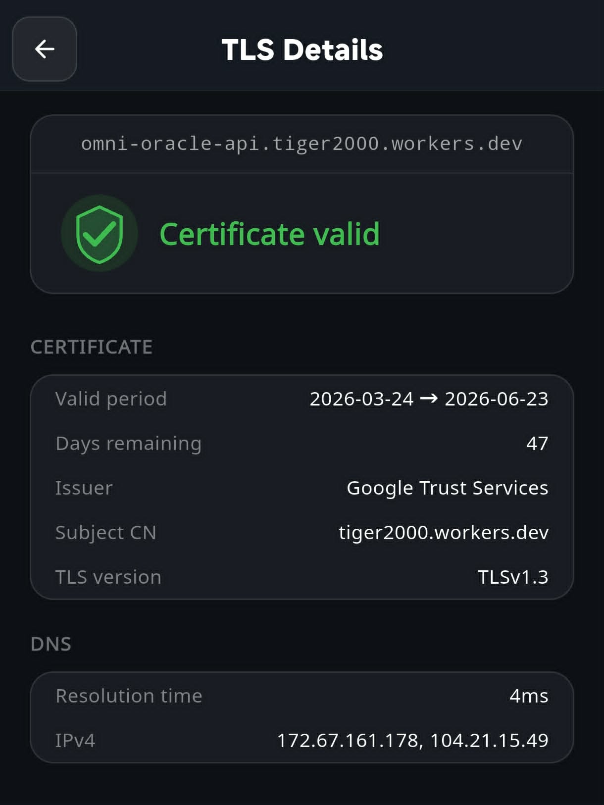
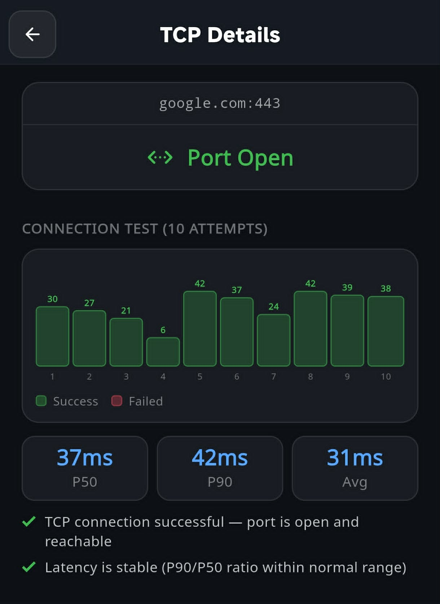
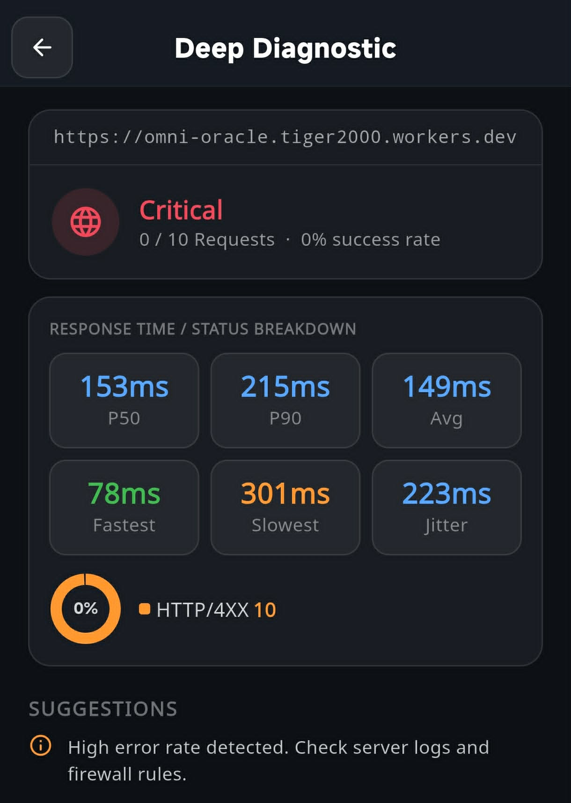
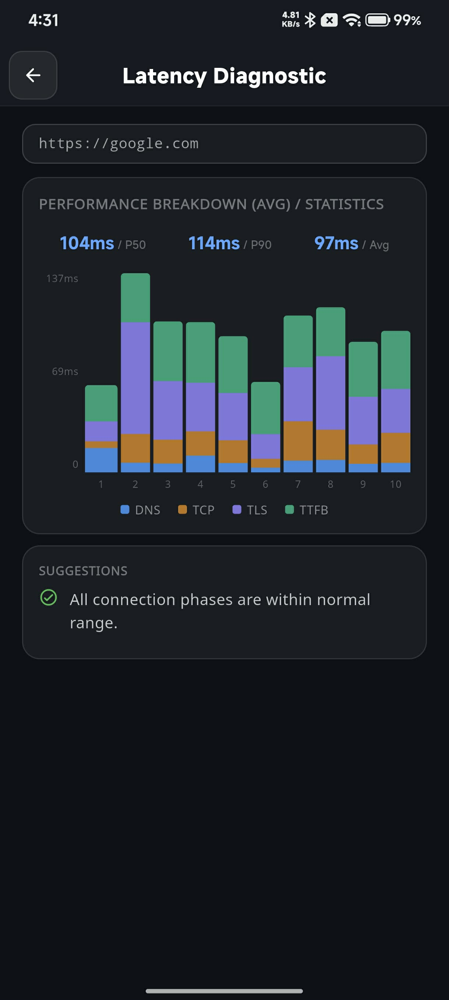

DevOps Service Monitor
A lightweight, privacy-first tool to monitor your servers and services — entirely on your device.
Track SSL/TLS certificate expiry.
Check host reachability.
Measure response time.
Monitor status codes.

The dashboard shows each monitor category summary.

View valid period and days remaining.

Runs 10 attempts to verify reachability.

Track 2XX, 4XX, and 5XX ratios.

Analyze DNS, TCP, TLS, and TTFB phases.